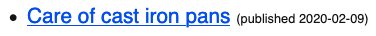
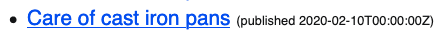
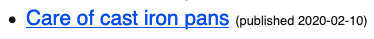

Eleventy static-site generator: Making Liquid play nice with dates
Published 2020-04-16
The Problem
I was working on rebuilding this site in the excellent Eleventy static-site generator when I noticed that when I specified a date in a template’s frontmatter, the date was a day off when displayed on the page.
Frontmatter:
---
title: Care of cast iron pans
date: 2020-02-10
---Template:
{{ page.date | date: '%Y-%m-%d' }}Result:

😕
Turns out, this is listed as a Common Pitfall in the Eleventy docs, and it occurs because Eleventy assumes time is UTC (and if you don’t specify a time, midnight UTC is assumed), while the templating uses your local timezone. So if you live in a timezone behind UTC, then your displayed dates are going to be a day behind your specified dates.
The docs suggest resolving this by creating a Liquid filter to call the JavaScript toUTCString() function:
.eleventy.js:
module.exports = function(eleventyConfig) {
eleventyConfig.addLiquidFilter("utcDate", function(value) {
return value.toUTCString();
});
};Template:
{{ page.date | utcDate }}This works…sort of. Except now it spits out the full date string:

And if we try to reformat it by adding the date filter back on…
{{ page.date | utcDate | date: '%Y-%m-%d' }}…we get same ol’ incorrect dates again:
😕
The Solution
Now that we’re done with the backstory, the solution I settled on was to write a filter that displays the date in UTC and also formats it as desired. I used the MomentJS library to help accomplish this.
First install it:
# npm install moment --savedevAnd then if you already have an .eleventy.js config file, add the highlighted lines below. If not, create .eleventy.js in the root of your project with all of the below.
var moment = require('moment');
module.exports = function(eleventyConfig) {
/* Other config stuff... */
eleventyConfig.addFilter("utcDate", function(value, arg) {
return moment(value).utc().format(arg);
});
/* And maybe more config stuff */
};Now that’s all done, all that’s left is to call our new filter on our date string. Note that Moment uses a different date formatting format.
Template:
{{ page.date | utcDate: 'YYYY-MM-DD' }}Result:

BINGO!